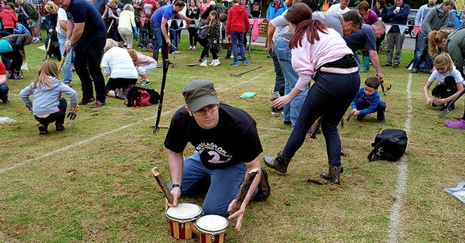

1. O campeonato de barba e bigode é realizado em vários lugares dos Estados Unidos e Europa, com o objetivo de eleger os melhores cortes em 15 categorias
2. A corrida do queijo é tradicional do Reino Unido. Um queijo redondo de quatro quilos é lançado ladeira abaixo, e uma multidão se joga atrás dele. Quem chegar primeiro ganha o queijo
3. "Air guitar" é um concurso que acontece no mundo todo, principalmente na Finlândia. Os competidores precisam apenas fingir que estão tocando uma guitarra
4. Os encantadores de minhoca devem recolher o máximo possível de bichos dentro de um espaço de terra delimitado, com tempo marcado. A prova acontece na Inglaterra desde os anos 1980, e a recordista é uma garota de 10 anos que recolheu 567 minhocas

5. Corrida com esposas - para participar, basta carregar sua esposa nas costas em um trajeto cheio de obstáculos